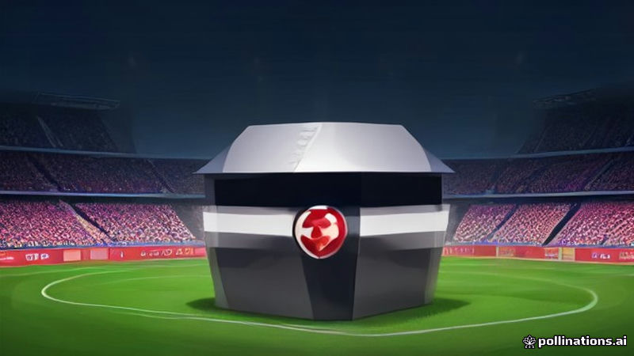

ইউইএফএ ফ্রেঞ্চ এফএ প্রধান ফিলিপ ডায়ালোরকে ইনফ্যান্টিনোর বিরুদ্ধে ফিফা নির্বাচনে সমর্থন জানায়
DW, France 24 · 2026-11-16
AI-generated illustrationইউইএফএ ডায়ালোরকে একমত সমর্থন দেয়, যিনি মার্চের ফিফা প্রেসিডেন্টি ভোটে বর্তমান গিয়ানি ইনফ্যান্টিনোর মোকাবেলা করবেন।
ইউইএফএ সোমবার একটি বিবৃতিতে জানিয়েছে যে ফরাসি ফুটবল ফেডারেশন প্রধান ফিলিপ ডায়ালোকে একমত সমর্থন দেয়, যাতে তিনি বর্তমান গিয়ানি ইনফ্যান্টিনোর বিরুদ্ধে মার্চে নির্ধারিত ফিফা প্রেসিডেন্টি নির্বাচনে প্রতিদ্বন্দ্বিতা করেন, ফ্রান্স ২৪ রিপোর্ট করেছে।
ডায়ালো ইনফ্যান্টিনোর দ্বিতীয় প্রতিদ্বন্দ্বী, এই তথ্য ডিডাব্লিউ জানিয়েছে, এবং ইউইএফএর সমালোচনা ইনফ্যান্টিনোর জুলাই মাসে বিশ্বকাপের শেয়ার বেসরকারি বিনিয়োগকারীদের কাছে বিক্রি করার প্রকল্পের উপর ভিত্তি করে।
ইউইএফএ প্রেসিডেন্ট আলেকজান্ডার সেফেরিনের নেতৃত্বে এই প্রকল্পের বিরোধিতা করা হয়েছে, যা ফিফার সম্ভাব্য বাণিজ্যিক পরিবর্তন নিয়ে উদ্বেগ প্রকাশ করে।
Written by AI from facts reported by the outlets named above. It may contain errors; check the original reporting.English version
UEFA backs French FA chief Philippe Diallo to challenge Infantino in FIFA election
UEFA announced on Monday that it gives unanimous backing to French Football Federation chief Philippe Diallo to stand against incumbent Gianni Infantino in the FIFA presidential election scheduled for March, according to France 24.
The move makes Diallo the second candidate to challenge Infantino, as reported by DW, and reflects UEFA's criticism of Infantino's July announcement to sell World Cup stakes to private investors.
UEFA President Aleksander Ceferin has led the opposition to Infantino since that announcement, underscoring the governing body's broader concerns about the proposed commercial changes.